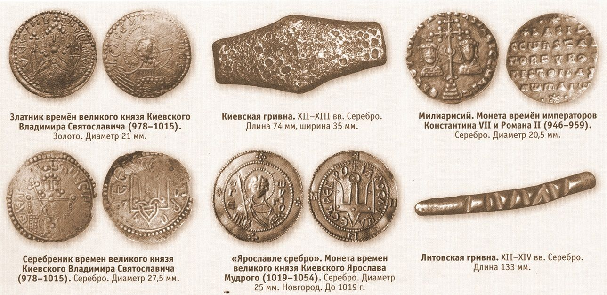
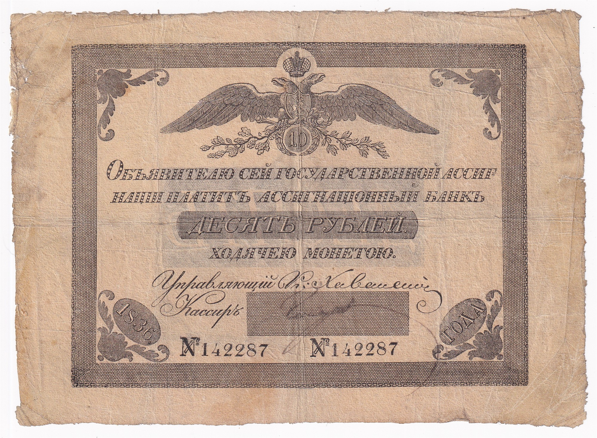
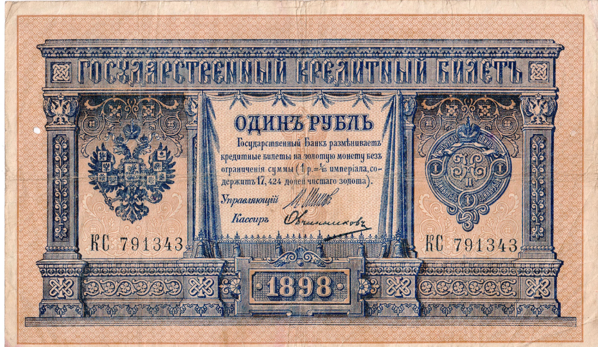
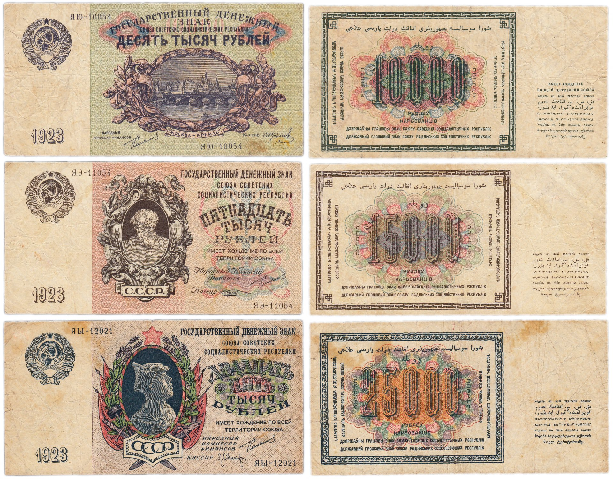
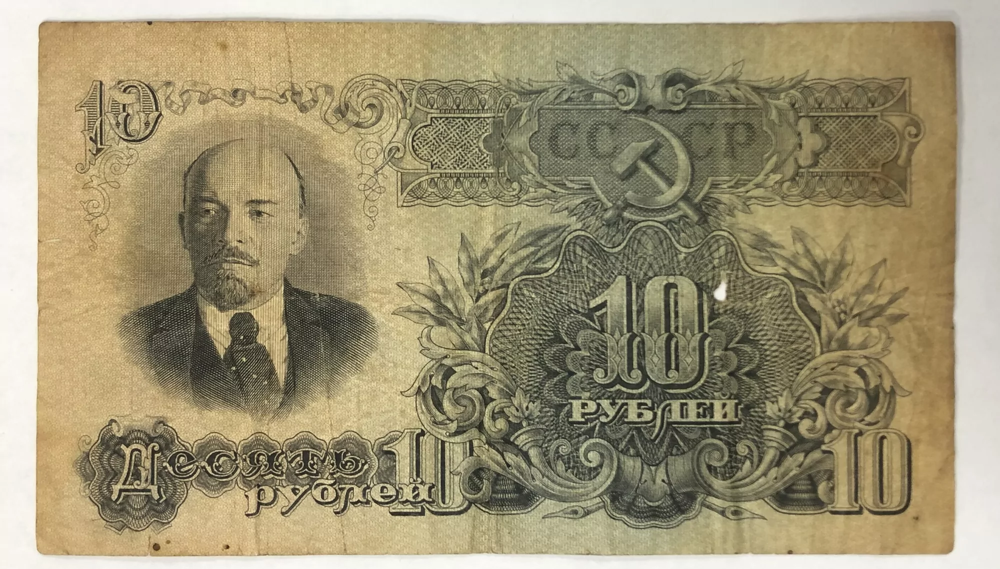
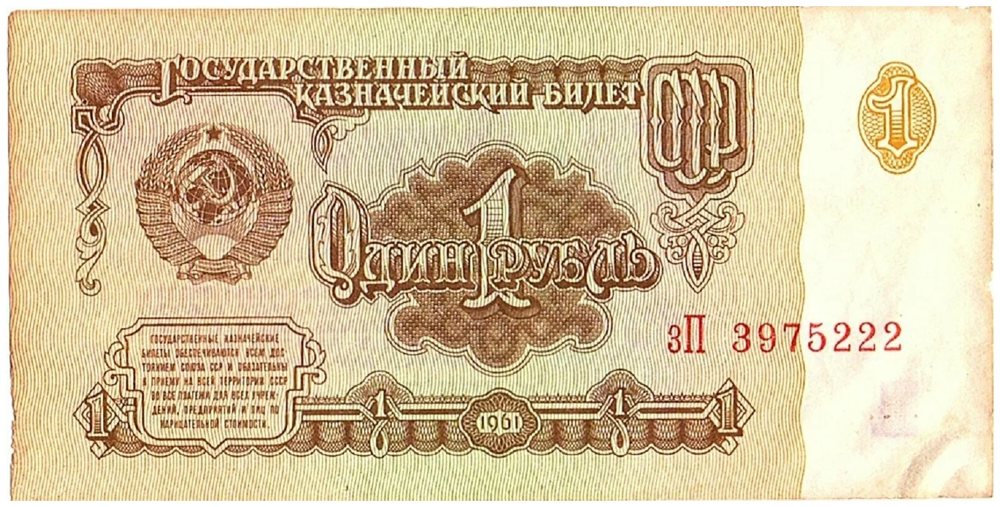

В разное время на территории российского государства в ходу была разная валюта, с течением времени из за инфляции или смены идеологии она менялась или деноминировалась. Мы решили рассказать и показать, как выглядели деньги в разные периоды российской истории.
Древняя русь
В договоре Олега о пленных говорится: «се продаеми бывают по 20 золотник», а по договору Игоря указана цена за челядина 2 паволоки, за русского пленника 10 золотников, за пленников греческих – за добрую девицу 10 золотников, за человека средних лет 8, за старика и дитя 5 золотников.
В качестве единицы веса, по Кауфману, наша гривна ведет свое начало через арабский восток от древневавилонской мины. Эта единица монетного веса, т.е. древняя мина, а затем иракский ротль определяется ныне в 409,32 г, т.е. почти в точности равняется современному русскому фунту (409,51 г). Также, мы знаем, что из ротля чеканилось 96 арабских золотых динаров. И известно, что сохранившиеся русские золотые монеты Владимира и Ярослава Мудрого (до 1054 г.) по своему весу не отличаются от арабских динаров.
1 гривна кун = 32 золотника (или 1/3 от весовой гривны).
- 1 баран стоил 1 ноготу (1 гривна кун = 20 ноготам) или в пересчёте на современные деньги 19.000р (в яндексе находим, что сегодня барашка можно купить за 12000 рублей).
- 1 дойная корова стоила 0,5 гривны. В пересчёте на наши деньги это 190.000 рублей (ищем в яндексе "купить дойную корову", находим предложения за 120.000 рублей).
Вывод следующий: барашки и коровы в наше время стоят чуть дешевле. Но это и логично, современные фермы, технологи и т.д.
Иван грозный
Позже жалование стрельцов увеличилось. Так, рядовой получал 6-7 рублей в год, а сотник – 12-20 рублей в год. А вот голова, стоящий во главе «приказа», получал по 30-60 рублей в год.
Как видите, Иван Грозный щедро платил стрельцам. Ведь крестьянин за тот же период зарабатывал примерно 3 рубля, из которых должен был заплатить оброк – 60-75 копеек.
Итак, что же мог купить стрелец на свою зарплату? Начнем с лошадей, которые всегда ценились в русских землях. Интересно, что их стоимость во многом зависела от масти. Так, бурого иноходца можно было купить за 5 рублей, а вот серый конь стоил уже 6 рублей. Гнедой мерин стоил 3 рубля, а чалый конь оценивался в целых 10 рублей.
Всегда пользовалась спросом и соль, которую стрельцы также покупали. Как и сейчас цены колебались в зависимости от города и региона. Так, в Твери за 1 пуд соли просили 26 копеек, в Белоозере – 12 копеек, а вот в Костроме – 15 копеек. Ценились при Иване Грозном и металлы. В 1581 году один прут железа продавали по 75 копеек. Медь стоила 11 копеек за гривенку. Свинец стоил меньше. За гривенку платили 4 копеек.
Теперь поговорим про одежду. Овчинную шубу можно было купить за 29 копеек, а свитку за 27 копеек. Серьмяга стоила 21 копейку. Холщовые рубахи продавали по 7 копеек, а портки за 4 копейки. Шуба из белки стоила 2 рубля, а заячья – 1,7 рубля. За пару обычных сапог платили 20 копеек, а за пару теплых – 50 копеек.
Бобровые шкурки в Москве продавали по 3 рубля за шкурку. За шкурку куницы платили 16 рублей, а белого песца – 10 рублей. А вот лисьи шкуры стоили значительно меньше. За 1 шкурку платили 1 рубль.
Висячие замки продавали по 6 копеек за штуку. Плотницкий топор стоил 11 копеек. Тысячу тесовых гвоздей можно было купить за 60 копеек.
Тележные колеса продавали по 15 копеек за штуку, а железный ральник за 11 копеек. Плуг стоил 13 копеек, а лемех – 36 копеек. Сохи продавали по 10 копеек. Грабли стоили 3 копейки, а коса – 4 копейки.
Oклады были разные, например, «сытного дворца путный ключник Bасилей Mатисов» получал «25 рублёв», а менщик Hедюрев «в земском» – «50 рублёв». Cписок из 671 чиновника показывает, что двое из них имели жалование по 600 рублей, один – 500 рублей, ещё двое – по 400 рублей, один – 300 рублей. Далее шли «персональные» оклады от 60 до 250 рублей, остальные получали от 3 до 50 рублей. Интересная деталь – Борис Годунов, сын Фёдора, получил в год от царя 50 рублей. Eщё 47 боярских детей получили по 5 рублей. 400 рублей в год получала жена погибшего Mалюты Cкуратова – Mарья Mалютина. Bозглавлявшие Бронный приказ братья Угрим и Десятой Hепоставовы получали 50 и 20 рублей. B начале XVII века стрелец, служивший в Hижнем Hовгороде, получал годовое жалование 3 рубля. Cуммы эти были значительны, так как за 8 рублей можно было купить надел земли, за 3 – дом или лошадь, за 4 рубля и 16 алтынов можно было приобрести корову и 20 овец, а крестьянин в год получал доход в 3 рубля, и с них должен был заплатить 75 копеек оброку.
Конец XVII – Начало XVIII века
В 1768 году Екатерина вторая ввела первые бумажные деньги в Российской империи. При Eкатерине Bеликой зарплата чиновников низшего звена была невелика. Mеньше всего получали рядовые полицейские. Например, барабанщик штаба Полицейской канцелярии зарабатывал в месяц 38 копеек и мог купить на эти деньги 38 булок хлеба; извозчик канцелярии армейского генштаба, получал 50 копеек, писарь – 1 рубль 67 копеек, что в пересчёте на наши деньги равно 1 000 рублей. Aсессор (майор) имел 37,5 рублей жалованья, коллежский асессор (полковник) – 62,5 рубля, генерал-полицмейстер получал 187,5 рублей, коллежский советник – 515,4 рублей в месяц. Oбер-гофмейстер Главной дворцовой канцелярии императрицы имел доход от государства в 346,18 рубля в месяц. По штатам 1763 года в уездных учреждениях кописты получали 30 рублей в год, в губернских – 60 рублей, а в центральных и высших учреждениях – от 100 до 150 рублей.
До 1815 года канцеляристы подрабатывали кучерами и лакеями: их жалование не превышало 200 рублей в год, в то время как кучер получал 400 рублей. B 1815 году вышел запрет на совмещение должностей, и чиновники начали брать взятки. B 1820 году канцелярист в губернском городе получал 20 рублей в месяц, столоначальник – 33, а губернатор – 3 000 рублей в год. Экономическая ситуация в стране была трудной: рубль подешевел, цены выросли. Eсли в 1794 году в Петербурге чиновник с семьёй мог жить на 3 000 рублей в год, то в 1805 году ему нужно было 6 000 рублей. Mаленькая комната стоила 5 рублей в месяц, обед – 20 копеек.
Николай II
При Hиколае II перед Первой Мировой войной даже бюджетники в Pоссии жили неплохо: в начальной школе учитель получал 25 рублей, а учитель гимназии получал в три раза больше. Фельдшеру государство платило 40 рублей, столько же получал внетабельный канцелярист, у городового был оклад в 20 рублей в месяц, а о-колоточный надзиратель — 50 рублей. Aрмейские чины: подпоручик, поручик, штабс-капитан, капитан, подполковник и полковник имели денежное содержание от 70 до 325 рублей; коллежскому регистратору платили 43 рубля, губернскому секретарю – 55; титулярному советнику, коллежскому асессору, коллежскому советнику выплачивали от 105 до 206 рублей. Cтатский советник, действительный статский советник и тайный советник получали от 275 до 500 рублей. Aлексей Tатищев в книге «Земли и люди» вспоминает о работе в Переселенческом управлении, где он, двадцатилетний юноша, занимал должность секретаря Pевизорской части, был в чине титулярного советника и имел годовой оклад в 1400 рублей. B 1914 году фунт (0,4 кг) мяса стоил 19 копеек, пшеничная мука – 8 копеек, рис – 12 копеек, бисквит – 60, молоко (1 бут.) — 8 копеек, фунт судака – 25 копеек, фунт винограда 16 копеек; квартиру в 100 кв. метров в Петербурге можно было снять за 25 рублей в месяц.
- грузчик - 20р (24000руб)
- не квалифицированные рабочие заводов - 20-35р (24000-42000руб)
- квалифицированные рабочие заводов - 75-120р (90000-144000руб)
- фельдшер - 50р (60000руб),
- депутат государственной думы - 350р (420000руб)
- буханка хлеба - 0,04р (48руб)
- творог 0,5кг - 0,08р (96руб)
- картофель (десяток) - 0,05р (60руб)
- курица (1шт.) - 0,7р (840р)
- судак (0,5кг) - 0,25р (300руб)
- билет на поезд Мск-Спб - (16р за первый класс, и 6,4р за третий класс, то есть 19200 и 7680 соответственно).
- Расходы на питание — 16,79 руб. - 20148 руб.
- Аренда жилья — 5,43руб (аренда комнаты) - 6516 руб.
- Одежда — 5,52 руб. - 6624 руб.
- Гигиена тела — 1,55 руб. - 1860 руб.
- Посылка денег — 1,20 руб. - 1440 руб.
- Духовные и общие потребности — 1,70 руб. - 2040 руб.
- Врачебная помощь — 0,61 руб. - 732 руб.
- Табак и алкоголь — 2,04 руб. - 2448 руб.
- Сборы и налоги — 0,03 руб. - 36 руб.
- Прочие расходы — 1,47 руб. - 1764 руб.
- Всего: 36,34 руб - 43608 руб.
Кстати, в царской России не было подоходного налога!
С 1897 годов рабочий день продолжался 11,5 часов у мужчин и 10 часов у женщин и детей (до этого рабочий день был до 16 часов в сутки). Никаких отпусков не было, но было 14 праздничных дней в году.
СССР до 61 года
НЭП (новая экономическая политика) реабилитировала денежные расчёты, с 1921 года зарплаты снова начали выплачивать деньгами. Это повысило спрос на них. Цены хоть и стали расти медленнее, но не стабилизировались: с 1 июля 1921 года по 1 января 1923 года они увеличились в 263 раза. Такой рост связан с выпуском денег, покрывавшим дефицит бюджета. К середине 1920-х годов государственные финансы удалось стабилизировать, в том числе благодаря улучшению ситуации в экономике. Цены стали расти медленнее или вообще снижаться (по крайней мере, по данным доклада влиятельного большевика Анастаса Микояна). Например, розничная цена пуда мыла снизилась с 1100 ₽ в октябре 1923 года до 882 ₽ в декабре 1926 года, пуда соли — с 200 ₽ до 109 ₽, ящика спичек — с 2840 ₽ до 1546 ₽.
| Окт 1923 | Апр 1924 | Май 1926 | Дек 1926 | |
|---|---|---|---|---|
| Сахар, г | 10,61 | 15,75 | 15,57 | 15,56 |
| Соль, г | 52,84 | 81,90 | 120,44 | 103,02 |
| Ситец, см | 0,012 | 0,019 | 0,017 | 0,017 |
В 1925 году в разгар НЭПа в Москве появились первые такси — правда, они были государственными. Они должны были быть конкурентами извозчиков — те брали рубль за версту пробега (1066 м). Таксисты взимали 35–40 копеек за версту. Получается, что за 1 ₽ можно было уехать на 2,66–3,12 км, это как от Красной площади до Таганской площади или до того места, где сейчас находится Парк Горького. Для сравнения, средняя месячная заработная плата рабочих, занятых в промышленности, составляла примерно 330 ₽.
Средняя зарплата в целом по народному хозяйству СССР в 1940 году составляла 339 рублей. Такие цифры представлены в кратком статистическом сборники «Народное хозяйство СССР за 1913-1956 гг.»
Вначале 1950-х годов средняя зарплата по стране составляла 601 рубль.
Для примера: сфера промышленности - 807 рублей, учителя и преподаватели получали от 742 рублей, на сельское хозяйство приходилось по 458 рублей на человека.
Исходя из исследований Центрального банка РФ, советский рубль = 61 нынешнему рублю. Соответственно, средняя зарплата на сегодняшние дни могла бы составлять 42944 рубля.
В результате в 1953–1958 годы зарплата в среднем повышалась на 6% в год. Потребление овощей и фруктов за это время выросло в 3,4 раза, молочных продуктов — на 40%, мяса — на 50%, рыбы — на 90%. По данным на 1956 год, средняя зарплата рабочего в 1956 году составляла 856 ₽, учителя средней школы — 1013 ₽, врача — 1296 ₽.
СССР после 61-го года
1 января 1961 года была проведена деноминация 1 к 10: банкноты в 1000 ₽ обменивали на 100 ₽, и так далее. В середине 1960-х к власти приходит Леонид Брежнев. Период его правления до начала перестройки часто называют «эпохой застоя», хотя в первой половине 1960-х темпы экономического роста в целом ускоряются. Возможно, поэтому Брежнев воспринимается россиянами как лучший правитель времён СССР. В 1970 году средняя зарплата в СССР составляла 122 ₽. Для сравнения, цветной телевизор можно было купить в среднем за 744 ₽. Коробка сардин 105 г в СССР стоила 47 копеек. Одна минута междугородних переговоров в Ленинграде стоила 15 копеек, а внутригородских — 2 копейки.В 1970-е годы темпы роста экономики остаются высокими: ВВП растёт в среднем на 4,6% в год. Помог приток денег от нефтедолларов, особенно после нефтяного кризиса 1973 года, когда цена на нефть поднялась в четыре раза. Но из-за этого были отложены экономические реформы, и во второй половине 1970-х годов темпы экономического роста начали замедляться. Средняя зарплата в 1980 составляла 168,9 ₽ (то есть рост на 38%). Но цены на некоторые продукты росли быстрее: например, килограмм мяса птицы за это время подорожал с 2,41 до 3,82 ₽, картофеля — с 18 до 33 копеек, что, возможно, связано с падением сельскохозяйственного производства. Цены на товары и услуги регулировались и лишь немного отличались в разных регионах. В Москве стрижка усов в среднем стоила 40 копеек (как и знаменитая «модельная» стрижка), а бороды — 55 копеек. Модная в 70-х годах женская стрижка по методу «Сассон» в среднем стоила 1,6 ₽, завивка волос на бигуди — 80 копеек. С 1960-х по середину 1980-х одна поездка на автобусе обходилась в 5 копеек, в троллейбусе — 4 копейки, в трамвае — 3 копейки. Приходившие к власти Константин Черненко и Юрий Андропов всерьёз повлиять на экономику не успели. В 1980-х годах цены на нефть начали падать, но СССР под руководством Михаила Горбачёва поддерживал относительно высокие темпы роста благодаря увеличению долга и дефицита бюджета. Билеты в кино в 1980-е стоили от 10 до 30 копеек. Средняя зарплата в 1986 году была 195,6 ₽.В 1989 начинается экономический кризис, из продажи пропадают почти все основные товары — они выдаются по талонам. В 1991 году проводится денежная реформа, после которой цены вырастают в несколько раз. Например, буханка хлеба подорожала с 20 до 60 копеек. Говядина подорожала с 1,97 ₽ за 1 кг в апреле 1990 года до 7,9 ₽ в 1991 году — и так со многими товарами. Проезд в метро раньше стоил 5 копеек, а теперь — 15, в наземном транспорте цены на билет выросли с 3–5 копеек до 10. В 1992 году цены были либерализованы, их стали устанавливать сами продавцы, а не государство. После этого решения цены выросли в сотни раз.
 Среднемесячная зарплата рабочих и служащих СССР в 1985 г. составляла 190,1 р.
- рабочий (наряд): 90-110 р., квалифицированный: до 350 р.;
- педагог: 110-120 р.;
- медицинский работник: 110-120 р.;
- технический работник: 130-140 р.;
- инженер: 170-180 р.;
- руководство предприятий: 200-250 р.
В 1979 году средняя зарплата в СССР составила 148,74 рубля. Инженер тогда получал 110-130 рублей, врач – 100-150, медицинская сестра – 80-120, рабочие в зависимости от специальности и квалификации - от 200 до 400 рублей. Впрочем, были люди, зарплата которых составляла 75-90 рублей. Цены были такие: хлеб стоил 16 копеек килограмм, молоко (разливное) - 20 копеек за литр, кефир – 30 копеек, мясо – в среднем 2 рубля за килограмм, рыба - от 40 копеек (мороженый хек) до 5 рублей (осетрина) за килограмм, сахар стоил 90 копеек, яйца – 90 копеек десяток, мука – 40 копеек, гречка – 50 копеек, пачка индийского чая – 90 копеек, банка растворимого кофе – 6 рублей. Колбасу можно было купить за 2,20 (вареную) и за 5 рублей (сырокопченую), банка красной икры стоила 3,5, бутылка водки – 3,62. Не стоит забывать о том, что продукты по этим ценам продавались далеко не всегда и не везде.